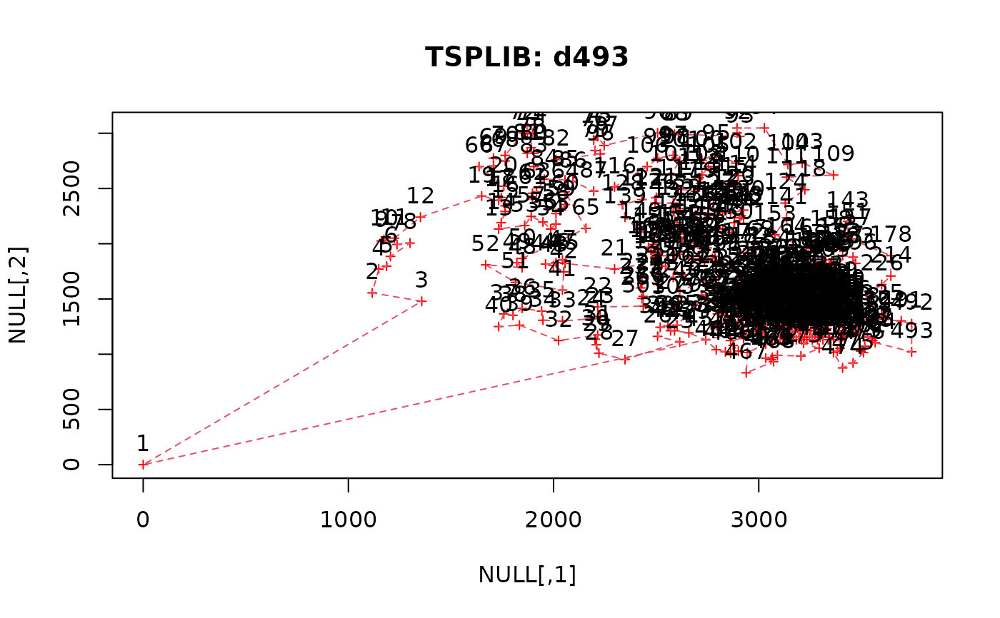

Reads and writes TSPLIB format files. TSPLIB files can be used by most TSP solvers. Many problems in TSPLIB format can be found in the local copy of the TSPLIB95 problem library.
Usage
read_TSPLIB(file, precision = 0)
write_TSPLIB(x, file, precision = 6, inf = NULL, neg_inf = NULL)
# S3 method for class 'TSP'
write_TSPLIB(x, file, precision = 6, inf = NULL, neg_inf = NULL)
# S3 method for class 'ATSP'
write_TSPLIB(x, file, precision = 6, inf = NULL, neg_inf = NULL)
# S3 method for class 'ETSP'
write_TSPLIB(x, file, precision = 6, inf = NULL, neg_inf = NULL)Arguments
- file
file name or a connection.
- precision
controls the number of decimal places used to represent distances (see details). If
xalready isinteger, this argument is ignored andxis used as is.- x
an object with a TSP problem.
NAs are not allowed.- inf
replacement value for
Inf(TSPLIB format cannot handleInf). IfinfisNULL, a large value of \(max(x) + 2 range(x)\) (ignoring infinite entries) is used.- neg_inf
replacement value for
-Inf. If no value is specified, a small value of \(min(x) - 2 range(x)\) (ignoring infinite entries) is used.
Details
In the TSPLIB format distances are represented by integer values. Therefore,
if x contains double values (which is normal in R) the values
given in x are multiplied by \(10^{precision}\) before coercion to
integer. Note that therefore all results produced by programs using
the TSPLIB file as input need to be divided by \(10^{precision}\) (i.e.,
the decimal point has to be shifted precision places to the left).
Currently only the following EDGE_WEIGHT_TYPEs are implemented:
EXPLICIT, EUC_2D, EUC_3D, ATT and GEO.
References
Reinelt, Gerhard. 1991. “TSPLIB—a Traveling Salesman Problem Library.” ORSA Journal on Computing 3 (4): 376–84. doi:10.1287/ijoc.3.4.376
See also
Other TSP:
ATSP(),
Concorde,
ETSP(),
TSP(),
insert_dummy(),
reformulate_ATSP_as_TSP(),
solve_TSP()
Examples
## Drilling problem from TSP
drill <- read_TSPLIB(system.file("examples/d493.tsp", package = "TSP"))
drill
#> object of class ‘ETSP’
#> 493 cities (Euclidean TSP)
tour <- solve_TSP(drill, method = "nn", two_opt = TRUE)
tour
#> object of class ‘TOUR’
#> result of method ‘nn+two_opt’ for 493 cities
#> tour length: 37870.05
plot(drill, tour, cex=.6, col = "red", pch= 3, main = "TSPLIB: d493")

## Write and read data in TSPLIB format
x <- data.frame(x=runif(5), y=runif(5))
## create TSP, ATSP and ETSP (2D)
tsp <- TSP(dist(x))
atsp <- ATSP(dist(x))
etsp <- ETSP(x[,1:2])
write_TSPLIB(tsp, file="example.tsp")
#file.show("example.tsp")
r <- read_TSPLIB("example.tsp")
r
#> object of class ‘TSP’
#> 5 cities (distance ‘unknown’)
write_TSPLIB(atsp, file="example.tsp")
#file.show("example.tsp")
r <- read_TSPLIB("example.tsp")
r
#> object of class ‘ATSP’ (asymmetric TSP)
#> 5 cities (distance ‘unknown’)
write_TSPLIB(etsp, file="example.tsp")
#file.show("example.tsp")
r <- read_TSPLIB("example.tsp")
r
#> object of class ‘ETSP’
#> 5 cities (Euclidean TSP)
## clean up
unlink("example.tsp")